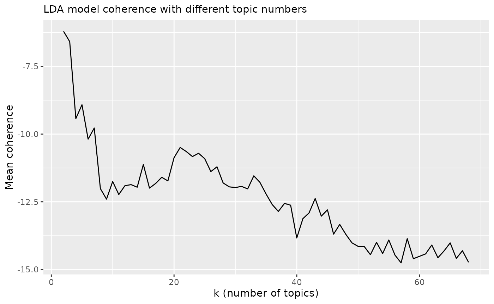
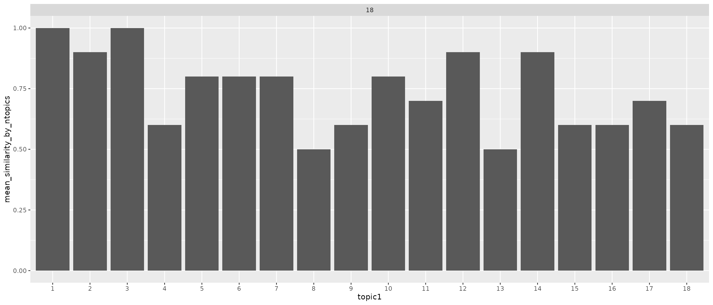
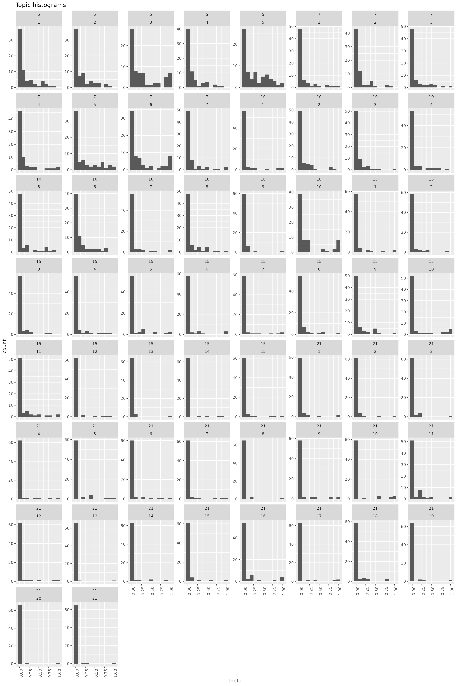
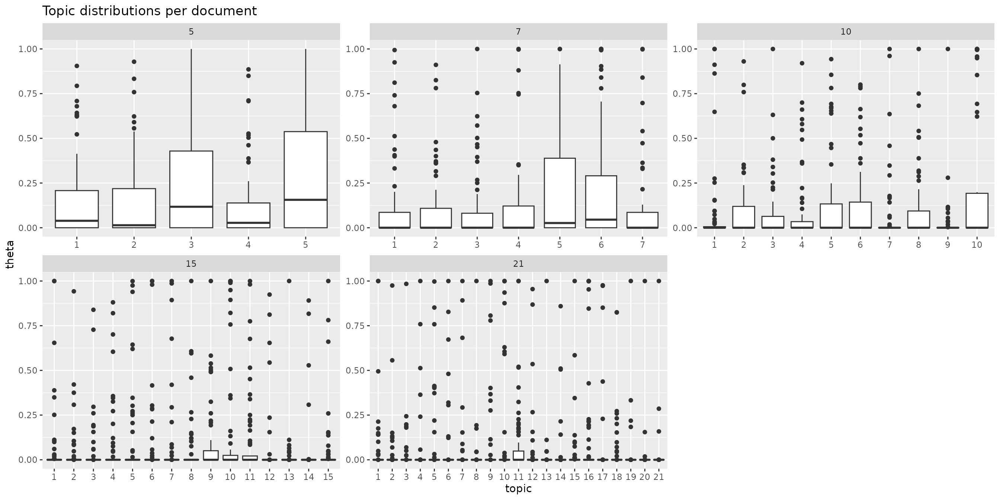

Topic modeling with latent Dirichlet allocation (LDA).
library(rfintext)
library(quanteda)
library(tidytext)
library(topicmodels) # LDA
library(topicdoc) # Coherence score
library(dplyr) # Tidyverse friends
library(tidyr) # Tidyverse friends
library(forcats) # Tidyverse friends
library(purrr) # Tidyverse friends
library(tidyr) # Tidyverse friends
library(ggplot2) # Tidyverse friends
library(cowplot) # Multiple plots made easy
library(future) # Parallel processing back-end
library(furrr) # Parallel processing front-end with future_ functions
plan(multisession, workers = availableCores(logical = FALSE) - 1) # Utilize multiple cores on time consuming tasks.You know already how to pre process and convert to document term matrix:
dtm <- aspol |>
preprocess_corpus(kunta) |>
count(kunta, LEMMA) |>
cast_dfm(kunta, LEMMA, n) # n is default name from dplyr::count()
dtm
#> Document-feature matrix of: 68 documents, 3,038 features (76.63% sparse) and 0 docvars.
#> features
#> docs A#talo Vapaa#aika aiheuttaa aika aika#väli ajatella alhainen alku alku#peräinen alku#puoli alue antaa arava#laina arava#rajoitus arvioida asettaa asia asiakas asian#mukainen asua
#> Enontekiö 3 1 3 7 1 1 1 1 1 1 17 3 1 1 1 2 3 3 1 5
#> Espoo 0 0 1 18 3 0 4 1 1 0 108 2 0 0 9 10 3 1 0 11
#> Eura 0 0 1 5 0 0 1 0 0 0 10 1 0 0 3 1 1 6 0 7
#> Hartola 0 1 2 5 0 0 0 0 0 0 4 0 0 0 3 0 0 0 0 6
#> Hattula 0 0 0 6 0 0 0 1 0 0 17 1 0 0 0 1 1 0 0 3
#> Helsinki 0 0 3 46 4 0 5 12 0 1 139 7 0 0 26 13 8 6 1 57
#> Huittinen 2 0 0 13 1 5 2 0 0 0 16 3 0 0 4 3 13 4 0 8
#> Hyvinkää 0 0 0 1 0 0 0 0 0 0 0 0 0 0 1 0 0 0 0 9
#> Hämeenlinna 0 3 3 1 0 0 0 1 0 0 18 3 0 0 2 0 29 3 0 10
#> Iitti 0 0 0 0 0 0 0 1 0 0 18 5 0 0 0 1 0 0 0 0
#> Imatra 0 0 0 2 0 0 0 0 0 0 6 0 0 0 2 0 1 0 0 11
#> Inkoo 0 0 1 11 1 0 1 2 0 0 26 4 0 0 0 5 2 0 0 3
#> Joensuu 0 0 1 33 2 1 4 4 1 0 129 2 0 1 9 13 5 4 0 25
#> Juva 0 0 2 13 5 0 2 3 0 0 19 2 1 0 1 2 2 3 0 10
#> Järvenpää 0 0 0 2 0 0 0 0 0 0 7 1 0 0 0 3 2 0 0 11
#> Kaarina 0 1 2 15 6 0 0 1 0 0 55 4 0 0 4 4 3 0 0 8
#> Kalajoki 0 0 0 1 0 0 0 0 0 0 5 0 0 0 2 0 0 0 0 0
#> Kauniainen 0 0 2 14 0 1 0 1 0 1 104 4 0 0 12 6 1 3 0 17
#> Kemiönsaari 0 3 3 12 1 1 1 3 2 0 136 14 0 0 3 3 1 2 0 8
#> Kerava 0 0 2 0 0 0 0 0 0 0 13 3 0 0 2 5 0 0 0 0
#> [ reached max_ndoc ... 48 more documents, reached max_nfeat ... 3,018 more features ]Let’s get straight to business. Unsupervised classification with LDA:
LDA needs one parameter k. Finding optimal values by
evaluating coherence score.
Note! Following will take some time even with multiple cores. For me it took around half an hour on laptop with 14 cores. Adjust number of K values accordingly. Here we test the whole scale for number of topics ranging from two to number of documents.
ptm <- proc.time()
lda_models <- tibble(K = 2:68) |>
mutate(
# LDA models
topic_model = future_map(
K, ~LDA(convert(dtm, to = "tm"), k = ., control = list(seed = 1234)), # Seed in parallel processing (problem?)
.options = furrr_options(seed = NULL)
),
# Model coherence
mean_coherence = future_map_dbl(
topic_model, \(x) mean(topic_coherence(x, dtm))
)
)
proc.time() - ptm
#> user system elapsed
#> 74.088 2.156 2333.289
lda_models
#> # A tibble: 67 × 3
#> K topic_model mean_coherence
#> <int> <list> <dbl>
#> 1 2 <LDA_VEM> -6.21
#> 2 3 <LDA_VEM> -6.59
#> 3 4 <LDA_VEM> -9.43
#> 4 5 <LDA_VEM> -8.92
#> 5 6 <LDA_VEM> -10.2
#> 6 7 <LDA_VEM> -9.77
#> 7 8 <LDA_VEM> -12.0
#> 8 9 <LDA_VEM> -12.4
#> 9 10 <LDA_VEM> -11.8
#> 10 11 <LDA_VEM> -12.2
#> # ℹ 57 more rows
p <- lda_models |>
ggplot(aes(x = K, y = mean_coherence)) +
geom_line() +
labs(subtitle = "LDA model coherence with different topic numbers",
x = "k (number of topics)", y = "Mean coherence")
p
Visually selecting potentially best k values
# optimal_k <- c(5, 9, 11, 15, 20)
optimal_k <- c(5, 7, 10, 15, 21)
p +
geom_vline(xintercept = optimal_k, linetype='dashed', color=c('red')) +
lapply(optimal_k, function(x) {geom_text(aes(x=x+1, label=x, y=-5), colour="red", angle=90)}) +
labs(subtitle = "Optimal k values",
x = "k (number of topics)", y = "Mean coherence")
#> Warning in geom_text(aes(x = x + 1, label = x, y = -5), colour = "red", : All aesthetics have length 1, but the data has 67 rows.
#> ℹ Did you mean to use `annotate()`?
#> All aesthetics have length 1, but the data has 67 rows.
#> ℹ Did you mean to use `annotate()`?
#> All aesthetics have length 1, but the data has 67 rows.
#> ℹ Did you mean to use `annotate()`?
#> All aesthetics have length 1, but the data has 67 rows.
#> ℹ Did you mean to use `annotate()`?
#> All aesthetics have length 1, but the data has 67 rows.
#> ℹ Did you mean to use `annotate()`?
NOTE! Coherence scores can change even for smallest adjustments to pre processing pipeline. Make your mind on those first and stick to it.
Highest coherence values: 5, 7, 10, 15, 21
selected_models <- lda_models |>
filter(K %in% optimal_k)
selected_models
#> # A tibble: 5 × 3
#> K topic_model mean_coherence
#> <int> <list> <dbl>
#> 1 5 <LDA_VEM> -8.92
#> 2 7 <LDA_VEM> -9.77
#> 3 10 <LDA_VEM> -11.8
#> 4 15 <LDA_VEM> -11.1
#> 5 21 <LDA_VEM> -10.5Extract beta and theta matrices with probabilities for terms per topic and documents per topic repectively.
Note!
tidytext::tidy()uses term gamma-matrix while in the research field term theta-matrix is used to describe probability distribution of topics per document. Here we rename gamma as theta. Do not get confused if at some point you come around with gamma instead of theta.
selected_models <- selected_models |>
mutate(
# Beta matrix
beta = map(
topic_model, \(x) tidy(x, matrix = "beta")
),
# Theta matrix (gamma)
theta = map(
topic_model, \(x) {
tidy(x, matrix = "gamma") |>
rename(theta = gamma)
}
)
)
selected_models
#> # A tibble: 5 × 5
#> K topic_model mean_coherence beta theta
#> <int> <list> <dbl> <list> <list>
#> 1 5 <LDA_VEM> -8.92 <tibble [15,190 × 3]> <tibble [340 × 3]>
#> 2 7 <LDA_VEM> -9.77 <tibble [21,266 × 3]> <tibble [476 × 3]>
#> 3 10 <LDA_VEM> -11.8 <tibble [30,380 × 3]> <tibble [680 × 3]>
#> 4 15 <LDA_VEM> -11.1 <tibble [45,570 × 3]> <tibble [1,020 × 3]>
#> 5 21 <LDA_VEM> -10.5 <tibble [63,798 × 3]> <tibble [1,428 × 3]>This is all good. Next parts look ugly but hopefully they work. We take a look at correlation between topics from different models to see if different models catch up same things.
topic_congruence <- list()
for (i in selected_models$K) {
topic_congruence[[paste0("model-", i)]] <- selected_models |>
select(K, beta) |>
unnest(beta) |>
filter(K==i) |>
pivot_wider(values_from = beta, names_from = topic) |>
select(-term, -K)
}
topic_congruence
#> $`model-5`
#> # A tibble: 3,038 × 5
#> `1` `2` `3` `4` `5`
#> <dbl> <dbl> <dbl> <dbl> <dbl>
#> 1 2.29e- 5 1.94e-28 0.000220 4.72e-20 0.00000000229
#> 2 2.78e- 5 1.48e-12 0.000253 1.34e- 3 0.0000496
#> 3 9.84e- 4 5.74e- 4 0.000817 5.26e- 4 0.0000883
#> 4 4.48e- 3 5.69e- 3 0.00328 3.14e- 3 0.00195
#> 5 5.24e- 4 8.70e- 4 0.000771 1.49e- 5 0.000428
#> 6 5.95e- 5 8.90e- 5 0.000186 8.17e- 4 0.0000542
#> 7 1.37e- 4 3.02e- 4 0.000685 2.27e- 4 0.0000315
#> 8 8.69e- 4 1.01e- 3 0.000473 1.13e- 3 0.000201
#> 9 2.90e- 4 1.62e-14 0.000108 1.09e- 8 0.0000343
#> 10 8.37e-10 4.98e- 5 0.0000911 2.56e- 4 0.0000188
#> # ℹ 3,028 more rows
#>
#> $`model-7`
#> # A tibble: 3,038 × 7
#> `1` `2` `3` `4` `5` `6` `7`
#> <dbl> <dbl> <dbl> <dbl> <dbl> <dbl> <dbl>
#> 1 5.21e-12 3.73e-132 2.95e-10 1.46e-32 3.93e-10 0.000406 1.19e-41
#> 2 1.90e- 6 6.72e- 18 2.30e- 4 1.07e- 4 6.17e- 4 0.000485 2.74e- 4
#> 3 8.99e- 4 2.68e- 4 4.15e- 4 1.05e- 3 9.02e- 5 0.000883 6.79e- 4
#> 4 4.60e- 3 5.74e- 3 2.62e- 3 4.73e- 3 1.70e- 3 0.00362 3.02e- 3
#> 5 5.90e- 4 4.26e- 4 9.71e- 4 1.02e- 3 4.06e- 4 0.000365 2.83e- 4
#> 6 1.54e- 5 3.34e- 4 7.77e- 5 9.30e- 5 2.75e- 4 0.000363 1.55e- 4
#> 7 1.25e- 4 2.41e- 4 6.78e- 4 8.50e- 5 4.62e- 6 0.000732 1.90e- 4
#> 8 9.04e- 4 1.41e- 3 2.93e- 4 4.87e- 4 2.83e- 4 0.000731 5.91e- 4
#> 9 9.02e- 5 1.18e- 18 4.02e- 7 1.22e- 8 2.01e- 5 0.000364 1.26e- 4
#> 10 2.98e-15 8.41e- 5 1.34e-11 8.37e-13 2.77e- 5 0.000159 2.57e- 4
#> # ℹ 3,028 more rows
#>
#> $`model-10`
#> # A tibble: 3,038 × 10
#> `1` `2` `3` `4` `5` `6` `7` `8`
#> <dbl> <dbl> <dbl> <dbl> <dbl> <dbl> <dbl> <dbl>
#> 1 9.09e-17 1.27e-176 3.55e- 8 9.89e-80 9.99e-11 8.82e-20 1.00e-172 2.41e-5
#> 2 3.95e-27 5.67e- 17 2.86e- 4 6.20e-11 1.09e- 3 1.21e- 6 2.69e- 4 5.11e-4
#> 3 9.34e- 4 4.14e- 4 3.47e- 4 1.20e- 3 9.81e- 5 2.27e- 5 5.71e- 4 5.06e-4
#> 4 4.77e- 3 5.64e- 3 2.79e- 3 3.73e- 3 2.23e- 3 9.16e- 4 3.54e- 3 4.31e-3
#> 5 7.11e- 4 7.58e- 4 1.09e- 3 6.33e- 4 6.85e- 4 5.98e- 5 1.53e- 4 2.35e-4
#> 6 4.59e- 5 5.28e- 5 1.80e- 4 5.20e- 6 4.83e- 4 7.43e-10 1.05e- 11 5.84e-4
#> 7 1.22e- 4 4.14e- 4 4.41e- 4 3.46e- 4 5.36e- 8 1.42e- 8 1.56e- 4 2.15e-4
#> 8 8.51e- 4 9.87e- 4 4.38e- 4 4.80e- 4 3.47e- 4 1.03e- 4 6.10e- 4 8.45e-4
#> 9 4.68e- 5 1.71e- 18 3.98e- 6 4.76e- 5 4.99e- 6 3.92e-90 1.48e- 4 1.83e-4
#> 10 3.71e-27 1.16e- 4 1.89e-14 7.99e-28 4.94e- 5 1.63e-10 3.18e- 4 3.37e-9
#> # ℹ 3,028 more rows
#> # ℹ 2 more variables: `9` <dbl>, `10` <dbl>
#>
#> $`model-15`
#> # A tibble: 3,038 × 15
#> `1` `2` `3` `4` `5` `6` `7` `8`
#> <dbl> <dbl> <dbl> <dbl> <dbl> <dbl> <dbl> <dbl>
#> 1 1.15e-83 9.21e-289 2.95e- 4 6.42e-166 2.06e-12 1.62e-279 4.86e-286 6.30e-13
#> 2 2.33e-25 1.15e- 24 6.34e-41 8.23e- 5 1.45e- 3 6.01e-201 2.57e- 4 4.27e- 4
#> 3 9.50e- 4 3.90e- 4 1.99e- 4 1.40e- 3 1.52e- 4 8.83e- 5 5.07e- 4 4.84e- 4
#> 4 2.58e- 3 6.06e- 3 3.48e- 3 3.68e- 3 2.43e- 3 3.62e- 3 3.53e- 3 4.10e- 3
#> 5 7.53e- 4 6.62e- 4 7.55e- 6 8.60e- 4 8.11e- 4 4.97e- 4 1.36e- 4 2.16e- 4
#> 6 1.14e- 4 1.13e- 7 1.06e-20 1.06e- 9 2.65e- 4 8.76e- 5 5.53e- 39 1.34e- 4
#> 7 2.46e- 9 6.88e- 4 7.69e- 4 2.29e- 6 1.17e-12 8.96e- 5 2.11e- 5 2.21e- 4
#> 8 1.80e- 4 1.15e- 3 7.51e- 6 4.32e- 4 3.85e- 4 5.40e- 4 5.84e- 4 8.98e- 4
#> 9 1.06e- 9 2.49e- 31 2.53e- 8 8.81e- 16 4.86e-17 1.67e-203 1.83e- 4 2.16e- 4
#> 10 1.74e-17 1.31e- 4 5.70e-10 1.71e- 54 5.71e- 5 1.11e- 4 1.11e- 8 1.11e-44
#> # ℹ 3,028 more rows
#> # ℹ 7 more variables: `9` <dbl>, `10` <dbl>, `11` <dbl>, `12` <dbl>,
#> # `13` <dbl>, `14` <dbl>, `15` <dbl>
#>
#> $`model-21`
#> # A tibble: 3,038 × 21
#> `1` `2` `3` `4` `5` `6` `7`
#> <dbl> <dbl> <dbl> <dbl> <dbl> <dbl> <dbl>
#> 1 1.04e-191 3.94e-192 2.12e- 15 1.47e-191 1.10e-12 1.90e-191 4.59e-192
#> 2 1.05e- 28 5.13e-133 4.73e- 87 7.99e- 16 1.98e- 3 1.05e-191 2.74e- 4
#> 3 1.28e- 3 3.34e- 4 6.62e- 4 7.02e- 4 8.83e- 5 7.51e- 10 5.40e- 4
#> 4 2.70e- 3 5.33e- 3 1.29e- 3 1.54e- 3 2.12e- 3 3.50e- 3 3.71e- 3
#> 5 3.17e- 4 3.91e- 4 1.39e- 6 1.90e- 10 7.22e- 4 1.05e- 11 1.03e- 4
#> 6 3.21e- 11 4.47e- 13 1.24e-128 2.68e- 12 6.01e- 4 1.17e- 4 2.53e-135
#> 7 4.67e- 8 4.80e- 4 6.53e- 4 5.06e- 4 3.83e-15 1.23e- 4 4.83e- 5
#> 8 7.13e- 10 1.14e- 3 2.01e- 7 3.03e- 4 2.18e- 4 5.49e- 4 5.38e- 4
#> 9 2.82e- 9 6.53e-200 5.71e- 19 5.02e- 6 1.25e-21 3.31e-318 2.13e- 4
#> 10 4.85e- 27 1.83e- 4 2.79e- 17 8.62e-174 8.34e- 5 1.43e-300 5.25e- 19
#> # ℹ 3,028 more rows
#> # ℹ 14 more variables: `8` <dbl>, `9` <dbl>, `10` <dbl>, `11` <dbl>,
#> # `12` <dbl>, `13` <dbl>, `14` <dbl>, `15` <dbl>, `16` <dbl>, `17` <dbl>,
#> # `18` <dbl>, `19` <dbl>, `20` <dbl>, `21` <dbl>Compare all possible pairs of models:
# combn(selected_models$K, 2)
topic_congruence2 <- list()
for (idx_col in 1:ncol(combn(selected_models$K, 2))) {
idx <- combn(selected_models$K, 2)[, idx_col]
correlation <- cor(topic_congruence[[paste0("model-", idx[1])]], topic_congruence[[paste0("model-", idx[2])]])
topic_congruence2[[paste0("model-", idx[1], "-", idx[2])]] <- correlation |>
as_tibble(rownames = "topic1") |>
pivot_longer(!topic1, names_to = "topic2", values_to = "r")
}
topic_congruence2 <- bind_rows(topic_congruence2, .id = "model-K")
topic_congruence2
#> # A tibble: 1,262 × 4
#> `model-K` topic1 topic2 r
#> <chr> <chr> <chr> <dbl>
#> 1 model-5-7 1 1 0.911
#> 2 model-5-7 1 2 0.487
#> 3 model-5-7 1 3 0.404
#> 4 model-5-7 1 4 0.643
#> 5 model-5-7 1 5 0.470
#> 6 model-5-7 1 6 0.504
#> 7 model-5-7 1 7 0.493
#> 8 model-5-7 2 1 0.643
#> 9 model-5-7 2 2 0.962
#> 10 model-5-7 2 3 0.662
#> # ℹ 1,252 more rows
topic_congruence2 |>
mutate(`model-K`= factor(`model-K`),
topic1 = factor(as.integer(topic1)),
topic2 = factor(as.integer(topic2)),
r = round(r, 2)) |>
ggplot(aes(x = topic1, y = topic2, fill = r, label = r)) +
geom_tile(show.legend = FALSE) +
geom_text() +
theme(axis.text.x = element_text(angle = 90)) +
labs(title = "Topic congruence between different models") +
scale_fill_viridis_c(option = "A") +
facet_wrap(~`model-K`, scales = "free", ncol = 2)
selected_models |>
select(K, theta) |>
unnest(theta) |>
mutate(topic = factor(as.integer(topic))) |>
summarise(mean_theta = mean(theta),
total_theta = sum(theta), .by = c(K, topic)) |>
ggplot() +
geom_col(aes(x = topic, y = total_theta)) +
labs(title = "Topic prevalence") +
facet_wrap(~K, scales = "free", ncol = 3)
Theta value is probability of document belonging to or comprising of certain topics. Histogram over topic probabilities shows how common it is for specific topic to comprise the whole document (height of a column at theta 1.0).
selected_models |>
select(K, theta) |>
unnest(theta) |>
ggplot(aes(x = theta)) +
geom_histogram(binwidth = 0.1) +
labs(title = "Topic histograms") +
theme(axis.text.x = element_text(angle = 90)) +
facet_wrap(K~topic, scales = "free_y")
selected_models |>
select(K, theta) |>
unnest(theta) |>
mutate(topic = factor(as.integer(topic))) |>
ggplot(aes(x = topic, y = theta, group = topic)) +
geom_boxplot(show.legend = FALSE) +
labs(title = "Topic distributions per document") +
facet_wrap(~K, scales = "free", ncol = 3)
selected_models |>
select(K, beta) |>
unnest(beta) |>
slice_max(beta, n = 25, by = c(K, topic)) |>
group_by(K) |>
add_count(term) |>
ungroup() |>
mutate(is_unique = n == 1,
K = factor(K),
topic = factor(topic),
term = reorder_within(term, beta, topic)) |>
ggplot(aes(x = beta, y = term, fill = K)) +
geom_col(show.legend = FALSE) +
labs(title = "25 terms with highest probability per topic") +
scale_y_reordered() +
facet_wrap(K ~ topic, scales = "free", ncol = 5)
# for (i in unique(beta_matrix$model)) {
# print(
# beta_matrix |>
# filter(model == i) |>
# group_by(topic) |>
# slice_max(beta, n = 25) |>
# mutate(topic = as.factor(paste0("Topic_", topic))) |>
# ggplot(aes(x = beta, y = reorder(term, beta), fill = topic)) +
# geom_col(show.legend = FALSE) +
# scale_fill_viridis_d(option = "A") +
# facet_wrap(~topic, scales = "free") +
# labs(title = "Top 25 terms by topic", subtitle = paste0("Model_", i), x = "Probability", y = "Term")
# )
# }
# for (i in unique(beta_matrix$model)) {
# print(
# beta_matrix |>
# filter(model == i) |>
# group_by(topic) |>
# slice_max(beta, n = 25) |>
# mutate(topic = as.factor(paste0("Topic_", topic))) |>
# ungroup() |>
# add_count(term, name = "in_topics") |>
# filter(in_topics == 1) |>
# ggplot(aes(x = beta, y = reorder(term, beta), fill = topic)) +
# geom_col(show.legend = FALSE) +
# scale_fill_viridis_d(option = "A") +
# facet_wrap(~topic, scales = "free", ncol = 2) +
# labs(title = "Unique terms out of top 25 terms by topic", subtitle = paste0("Model_", i), x = "Probability", y = "Term")
# )
# }
# doc_topics <- lapply(lda_models, function(x) {
# x |>
# tidytext::tidy(matrix = "gamma") |>
# tidytext::cast_dfm(document, topic, gamma)
# })
# doc_topics
# join_y <- function(df) {
# df |>
# left_join(taantuvat, by = join_by("doc_id" == "kunta")) |>
# filter(!is.na(luokka))
# }
# summarise_topics <- function(df, ...) {
# df |>
# mutate(topic = factor(as.integer(topic))) |>
# summarise(...)
# }
# plot_topic_mean_prop <- function(df, ...) {
# df |>
# ggplot() +
# geom_point(aes(...))
# }
# lapply(doc_topics, function(x) {
# x |>
# gather_topic_prob() |>
# join_y() |>
# summarise_topics(sum_prop = sum(prop), .by = c(luokka, topic)) |>
# plot_topic_mean_prop(x = topic, y = sum_prop, colour = luokka)
# }
# )
# lapply(doc_topics, function(x) {
# x |>
# gather_topic_prob() |>
# join_y() |>
# summarise_topics(mean_prop = mean(prop), .by = c(luokka, topic)) |>
# plot_topic_mean_prop(x = topic, y = mean_prop, colour = luokka)
# }
# )
# taantuvat |>
# filter(kunta %in% unique(aspol$kunta)) |>
# mutate(luokka = if_else(suht_muutos_2010_2022 > 0, "Kasvava", "Taantuva")) |>
# count(luokka, sort = TRUE)
# purrr::imap(doc_topics, function(x, name) {
# x |>
# gather_topic_prob() |>
# join_y() |>
# select(doc_id, topic, prop, suht_muutos_2010_2022, luokka) |>
# tidyr::pivot_wider(names_from = topic, values_from = prop) |>
# rename_with(~ paste0("topic_", .x, recycle0 = TRUE), matches("^[0-9]+$")) |>
# write.csv(paste0("topic_", name, ".csv"))
# })
# dat <- doc_topics$k_5 |>
# gather_topic_prob() |>
# join_y() |>
# mutate(luokka = if_else(suht_muutos_2010_2022 > 0, "Kasvava", "Taantuva"),
# topic = factor(as.integer(topic))) |>
# select(topic, prop, luokka)
# dat
# for (i in seq_along(unique(dat$topic))) {
# cat("Topic ", i)
# print(
# dat |> filter(topic == i) |>
# ggplot() +
# geom_boxplot(aes(x = luokka, y = prop)) +
# labs(title = paste0("Topic ", i))
# )
# print(
# dat |>
# filter(topic == i) |>
# kruskal.test(luokka ~ prop, data = _)
# )
# }
# doc_topics$k_5 |>
# gather_topic_prob() |>
# join_y() |>
# mutate(luokka = if_else(suht_muutos_2010_2022 > 0, "Kasvava", "Taantuva"),
# topic = factor(as.integer(topic))) |>
# summarise(topic_sum = sum(prop),
# topic_mean = mean(prop),
# .by = c(luokka, topic)) |>
# kruskal.test(topic_sum ~ luokka)
# lapply(doc_topics, function(x) {
# x |>
# gather_topic_prob() |>
# join_y() |>
# mutate(luokka = if_else(suht_muutos_2010_2022 > 0, "Kasvava", "Taantuva"),
# topic = factor(as.integer(topic))) |>
# summarise(mean_prop = mean(prop), .by = c(luokka, topic)) |>
# tidyr::pivot_wider(names_from = luokka, values_from = mean_prop) |>
# mutate(diff = Kasvava-Taantuva) |>
# ggplot() +
# geom_point(aes(x = topic, y = diff)) +
# ylim(-0.4, 0.4) +
# geom_hline(yintercept = 0)
# })
# lapply(doc_topics, function(x) {
# x |>
# gather_topic_prob() |>
# join_y() |>
# mutate(luokka = if_else(suht_muutos_2010_2022 > 0, "Kasvava", "Taantuva"),
# topic = factor(as.integer(topic))) |>
# summarise(topic_sum = sum(prop),
# topic_mean = mean(prop),
# .by = c(luokka, topic)) |>
# ggplot() +
# geom_tile(aes(x = topic, y = luokka, fill = topic_sum)) +
# scale_fill_viridis_c(option = "A")
# }
# )
# lapply(doc_topics, function(x) {
# x |>
# gather_topic_prob() |>
# join_y() |>
# mutate(luokka = if_else(suht_muutos_2010_2022 > 0, "Kasvava", "Taantuva"),
# topic = factor(as.integer(topic))) |>
# summarise(topic_sum = sum(prop),
# topic_mean = mean(prop),
# .by = c(luokka, topic)) |>
# ggplot() +
# geom_tile(aes(x = topic, y = luokka, fill = topic_mean)) +
# scale_fill_viridis_c(option = "A")
# }
# )
# lapply(doc_topics, function(x) {
# x |>
# gather_topic_prob() |>
# join_y() |>
# mutate(luokka = if_else(suht_muutos_2010_2022 > 0, "Kasvava", "Taantuva"),
# topic = factor(as.integer(topic))) |>
# summarise(mean_prop = mean(prop), .by = c(luokka, topic)) |>
# tidyr::pivot_wider(names_from = luokka, values_from = mean_prop) |>
# mutate(diff = Kasvava-Taantuva) |>
# tidyr::pivot_longer(Kasvava:Taantuva, names_to = "luokka", values_to = "prop") |>
# ggplot() +
# geom_tile(aes(x = topic, y = luokka, fill = diff)) +
# scale_fill_distiller(palette = "Spectral")
# })
# titles <- aspol |>
# group_by(kunta) |>
# slice_head(n=10) |>
# summarise(title = paste(FORM, collapse = " ")) |>
# inner_join(taantuvat)
# titles
# titles_per_topics <- lapply(doc_topics, function(x) {
# gather_topic_prob(x) |>
# slice_max(order_by = prop, n = 1, by = doc_id) |>
# left_join(titles, by = join_by("doc_id" == "kunta"))
# })
# titles_per_topics
# titles_per_topics$k_5 |>
# filter(topic==3) |>
# select(doc_id, title)
# doc_topics$k_5 |> convert(to = "data.frame") |>
# tidyr::pivot_longer(!doc_id, names_to = "topic", values_to = "prop") |>
# left_join(taantuvat, by = join_by("doc_id" == "kunta")) |>
# filter(!is.na(luokka)) |>
# group_by(luokka, topic) |>
# summarise(mean_prop = mean(prop)) |>
# ggplot() +
# geom_point(aes(x = topic, y = mean_prop, colour = luokka))
# doc_topics$k_5 |> convert(to = "data.frame") |>
# tidyr::pivot_longer(!doc_id, names_to = "topic", values_to = "prop") |>
# ggplot() +
# geom_col(aes(x = prop, y = topic))